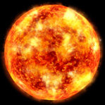
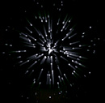

Справочник >
Космические объекты
|
Справочник >
Космические объекты
|
| Космические объекты В космосе находятся следующие объекты, с которыми игрок может взаимодействовать: • Звезды • Планеты • Космические станции • Корабли • Черные дыры • Астероиды • Минералы • Грузы При наведении курсора на любой из этих объектов появляется всплывающее окно с информацией по данному объекту. Звезды  В центре звездной системы всегда находится звезда. Корабли стараются облетать звезды по безопасной траектории, так как при близком контакте обшивка корабля может получить серьезные повреждения. Вокруг звезды по круговым орбитам вращаются планеты. При наведении курсора на звезду можно получить полный список планет и космических станций в указанной звездной системе. Планеты  Планеты - это космические объекты, на которые можно совершить посадку. Планеты бывают обитаемые и необитаемые. Узнать, к какому типу относится планета, можно путем наведения на нее курсора мыши. На необитаемых планетах можно использовать зонды для поиска различных грузов, оборудования и других вещей, оставшихся от сбитых кораблей. На обитаемых планетах можно торговать, покупать оборудование и вооружение, заправляться, чинить оборудование корабля, посещать информационный центр или здание правительства. У каждой планеты есть свой небольшой военный флот, который ее охраняет от доминаторов и пиратов. На планетах постоянно происходят случайные события вроде смены правительства или засухи, которые могут привести к экономическим катаклизмам. Это дает возможность пилотам кораблей заработать на перевозке нужных грузов. О событиях на ближайших планетах всегда можно узнать в информационном центре. Также на планетах ведутся научные разработки и изготавливаются новые виды оборудования. В начале игры технологический потенциал планет невысок, и в магазинах продаются не самые крутые вещи. Постепенно планеты осваивают то одну, то другую технологию, и на прилавках магазинов появляется все более передовое оборудование. Скорость научного развития планеты зависит от проживающей расы, политического строя, численности населения и особенностей экономики. Самыми быстрыми в этом отношении являются большие, технологически развитые гаальские планеты с демократической формой правления. Но зато и оборудование у гаальцев самое дорогое. Черные дыры  Объекты, на пилотском сленге называемые "черными дырами", образуются непредсказуемым образом и точно так же, через случайные промежутки времени, закрываются. Представляют собой двусторонний переход (туннель) между двумя звездными системами. Полет корабля через такую дыру происходит без каких-либо затрат топлива, поэтому это самый быстрый и дешевый способ перемещения. Но есть и другая сторона. В черных дырах обитает мощный доминатор Келлер, а так же корабли неизвестных рас, с которыми вам предстоит сразиться в режиме аркадной битвы. Об образовании и закрытии черных дыр сообщают в планетарных новостях. Порой даже известно, куда ведет та или иная дыра. Астероиды  Астероиды перемещаются согласно закону всемирного тяготения в поле притяжения других космических тел. Они двигаются с большой скоростью и представляют серьезную опасность для кораблей. Врезавшись в корабль, они могут сильно его повредить. Поэтому капитаны кораблей часто расстреливают астероиды из своих орудий. Минералы  Каждый астероид
несет в себе некоторый запас полезных ископаемых. Если астероид расстрелять
аккуратно, то этот запас, практически неповрежденный, выпадает в космос в виде
минералов, и их впоследствии можно будет собрать.
Собранные минералы можно продать в торговом центре на любой планете. Каждый астероид
несет в себе некоторый запас полезных ископаемых. Если астероид расстрелять
аккуратно, то этот запас, практически неповрежденный, выпадает в космос в виде
минералов, и их впоследствии можно будет собрать.
Собранные минералы можно продать в торговом центре на любой планете.Грузы  Также в космосе
могут плавать контейнеры с оборудованием, оружием или товарами, выпавшие с других
кораблей. При помощи захвата эти контейнеры можно поднять на борт корабля. Также в космосе
могут плавать контейнеры с оборудованием, оружием или товарами, выпавшие с других
кораблей. При помощи захвата эти контейнеры можно поднять на борт корабля. |